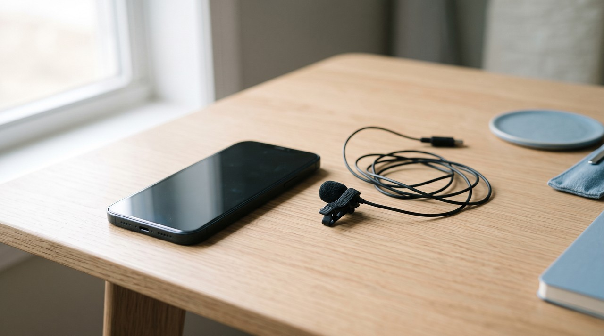

Kokoro TTS voice cloning: can Kokoro clone your voice? No, and what to use instead
Kokoro TTS cannot clone your voice. Kokoro-82M is a free text to speech model with 82 million parameters under the Apache 2.0 licence, and it speaks only in its 54 ready made voices across 8 languages. You can blend two of those voices, and a community tool called KVoiceWalk can search for a voice close to a recording over several hours, but for a real clone you need a model like GPT-SoVITS.
| Kokoro-82M | Kokoro plus KVoiceWalk | GPT-SoVITS | VoiceClone | |
|---|---|---|---|---|
| Can it copy your voice? | No, 54 ready made voices only | Close, by a slow search, results vary | Yes, from a 5 second clip, or 1 minute to fine tune | Yes, from 1 to 3 minutes of your voice |
| Licence | Apache 2.0, commercial use allowed | Apache 2.0 | MIT | Free tier, then $49 once |
| Time to a voice | None, pick a voice name | About 4 hours on an RTX 3060, about 26 hours on a processor | Seconds for a quick clone, longer to fine tune | Minutes for an instant clone, longer to train |
| Size and speed | 82 million parameters, very fast, fine on a processor | Same model at the end | Much bigger, a graphics card helps a lot | Faster with an NVIDIA card, a processor works |
| Languages | 8, mostly English voices | Same as Kokoro | English, Japanese, Korean, Cantonese, Chinese | English |
| Getting it running on Windows | pip install kokoro, then the espeak-ng installer | A Python project you run on top of Kokoro | The ready made Windows package and go-webui.bat | Double click START VoiceClone.bat |
Written by Inam, who builds VoiceClone, so keep in mind that the last column is my own app and I am not neutral about it. My other engineering work is on designesh.com. Last updated 14 October 2026.
If you have looked for a free text to speech model lately, Kokoro is one of the first names you see, and people love it for good reasons. It is tiny, it is fast, it sounds clean, and its licence lets you use it commercially. So the natural next question is whether you can give it a recording of your own voice and have it talk like you.
No, Kokoro cannot clone your voice. It only speaks in the voices it was trained with, and you choose one of them by name. There are two workarounds that get partway there, which I explain below, but if you want your own voice back, you need a different model.
What is Kokoro TTS?
Kokoro is a text to speech model, which means you type a sentence and it reads it out loud. The full name is Kokoro-82M, because it has 82 million parameters, the numbers a model learns during training. That is very small next to most voice models, and it is the reason Kokoro runs quickly even on a normal processor.
It was made by a developer who publishes as hexgrad, and it is built on an earlier research design called StyleTTS 2. The first public version, v0.19, came out on 25 December 2024 with 1 language and 10 voices. Version 1.0 followed on 27 January 2025 with 8 languages and 54 voices, and the model card says that version cost about $1000 to train on rented A100 graphics cards.
The weights are under the Apache 2.0 licence, which is a very open licence that allows commercial use. That is a real advantage over some other free models. F5-TTS, for example, has a non commercial model, which I wrote about in F5-TTS voice cloning.
Why can't Kokoro clone a voice?
Because cloning was never part of how it was built. A cloning model takes a recording of a new person and turns it into something it can speak with. Kokoro does not have that step. Each of its voices is a voicepack, a small file of numbers that describes one speaker, and those files were made during training from hours of that speaker's audio.
Kokoro's first model card said it plainly in its list of limits: it lacks voice cloning capability, likely due to a small training set of under 100 hours of audio. The current card does not repeat that list, but nothing has changed in practice. The official kokoro library on GitHub loads a voice by name, like af_heart or bm_george, and has no function that takes your recording.
Two examples make the difference clear. You want a calm narrator for a tutorial and you do not care whose voice it is: Kokoro is a great choice. You want the tutorial in your own voice, so your channel sounds like you: Kokoro cannot do that, so use a model that clones.

Can you make a custom voice in Kokoro?
You can make a mix, but not a copy. The kokoro library lets you give it two voice names with a comma between them, like af_bella,af_sarah. In its own code it then averages the two voicepacks number by number, so you get a voice that sits somewhere between those two speakers.
That is useful when no single voice fits your project. But it only moves you between voices Kokoro already has, so it will never land on yours. Be careful with websites that offer Kokoro cloning, too. The model page itself warns that sites with kokoro in their domain name are not owned by or affiliated with the model's author.
What is KVoiceWalk, and does it work?
KVoiceWalk is a free community project, also under Apache 2.0, that tries to build a Kokoro voicepack that sounds like a recording you give it. You hand it about 20 to 30 seconds of one speaker as a mono WAV file at 24 kHz, plus the words spoken in it. It does not train Kokoro. Instead it does a random walk, which means it nudges the numbers of a voicepack a little, listens to the result, and keeps the change only when it sounds closer to your recording.
To judge closer, it scores each try three ways: how similar the voice is to yours using a speaker check called Resemblyzer, how stable it stays across different sentences, and whether the audio quality holds up. The README says the default run of 10,000 steps took about 4 hours on an RTX 3060 graphics card and about 26 hours on a processor. In the author's example, a stock Kokoro voice scored 71 percent similar to the target and the finished voicepack scored 93 percent.
The honest catch is in the same README. It calls the results random: some runs get good after a long time and some fail right away. The author also calls it a proof of concept, and a 93 percent score from a similarity checker is not the same as a friend not noticing the difference. If you like Kokoro and enjoy experimenting, KVoiceWalk is worth a try, but do not plan a real project around it.
Which free tools can actually clone your voice?
The models that really clone take your recording as their input, either instantly or by training on it. GPT-SoVITS is the one I trust most for one person's voice. It can copy a voice from a 5 second clip, and if you give it about 1 minute of the same voice and let it fine tune, it keeps much more of the real accent and rhythm. It is under the MIT licence, so commercial use is fine. I explain how it works in GPT-SoVITS in plain words.
There are instant options too. Chatterbox clones from a short clip and is MIT, but it puts a hidden watermark in every file, which I covered in Chatterbox TTS. F5-TTS also clones from a few seconds, but its official model is non commercial. I compare the rest in the best free voice cloning tools.
To be fair to Kokoro, it does some things better than all of these. It is far smaller and faster, it runs comfortably without a graphics card, and its best voices sound very clean for long reading. So if you need a good voice and not your voice, Kokoro is one of the best free choices. If you need your own voice, choose a cloning model.
Where does VoiceClone fit?
I built VoiceClone for exactly the job Kokoro skips. It is a Windows 10 and 11 app with GPT-SoVITS inside, and it works fully offline, so your recordings stay on your own disk and are never uploaded. Setup is one file, START VoiceClone.bat, and there is no Python for you to deal with.
You give it 1 to 3 minutes of your own voice and it checks that recording before anything else. Then the Make it perfect button trains a voice on your PC. An NVIDIA card makes that faster, and a normal processor still gets there.
The limits, plainly: it speaks English only and it cannot sing. For free you can clone and fully train one voice and then make 3 generations to hear it. If you want to keep going, the $49 one time license adds unlimited length, the word editor, retraining and exports, and there is no subscription. Clone only your own voice, or the voice of someone who has clearly said yes. You can get it from the download page.
FAQ
Does Kokoro TTS support voice cloning?
Kokoro does not support it, because Kokoro-82M speaks only in its 54 ready made voices, and the official kokoro library has no way to load your recording as a new voice. Its first model card listed the missing cloning as a limit of its small training set.
Can I use Kokoro TTS commercially?
You can, because the Kokoro-82M weights are under the Apache 2.0 licence, which allows commercial use. The voices are still Kokoro's own voices, not yours.
Can I mix two Kokoro voices?
Give the library two voice names separated by a comma, like af_bella,af_sarah, and it averages the two voicepacks into one. The result sits between those two voices and cannot match a new person.
What is the best free alternative to Kokoro for voice cloning?
For your own voice, GPT-SoVITS is the strongest free option, because it can fine tune on about 1 minute of your audio and its MIT licence allows commercial use. Chatterbox and F5-TTS clone instantly from a short clip, each with its own catch.
Sources: the Kokoro-82M model card and VOICES.md on Hugging Face and the hexgrad kokoro library on GitHub, including its pipeline code, the original v0.19 Kokoro model card, the KVoiceWalk README on GitHub, all read on 14 October 2026, the GPT-SoVITS README and LICENSE file on GitHub, and the VoiceClone product page on myvoiceclones.com.
Hear your own voice come back.
The free Windows app clones and fully trains one voice, yours, on your own PC. No account, no upload, and the download starts right away.